tsop #01 — union chapel (islington, london, uk)
a sound installation by tiago c. (2010)
The 14m 30s version playing at the Union Chapel foyer small room on 22nd May 2010 during Daylight Music (feat. Nils Frahm, Simon Scott, and Isnaj Dui).
Between January and March 2010, Tiago E. wandered around the Union Chapel (Islington, London) capturing sounds: the sound of voices in hallways, the tuning of instruments, soundchecks, quiet noises, footsteps, doors opening and closing, the sound of sirens and traffic outside, the sounds of the unpredictable, the sound of “ghosts”... and filming spaces, objects, and architectural details (stained glass, windows, doors, shadows, corridors...).
The idea was to make a documentary-essay, a collage of sounds and images to be presented in the form of a 30-minute video/sound installation to be played in a loop. Here, sound is the primordial element. It is sound that reveals the vitality of a sacred building which became one of the most prominent live venues in the London music scene.
This installation is a reflection on what the Union Chapel is and represents—an attempt to recreate the common platform between religion and pop music, to link the sounds that live in the place to the infinite set of images they can represent, and to expose the silence of prayers to concrete impossibility.
Private View
Union Chapel Bar — 13.05.2010, 8 pm
Entrance via Compton Ave (at the rear of the church), N1 2UN (Free event)
Exhibition / Private View
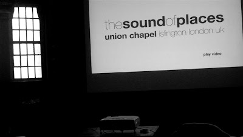
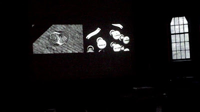
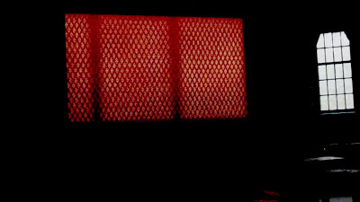
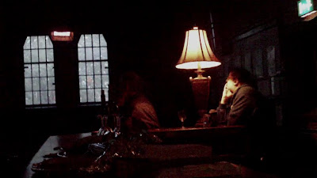
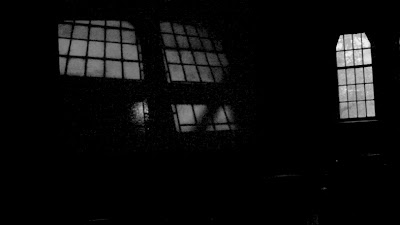
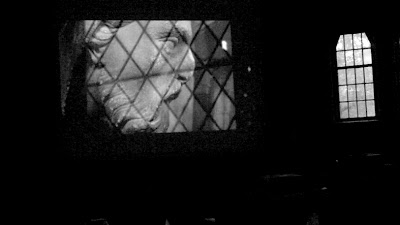
Video Stills
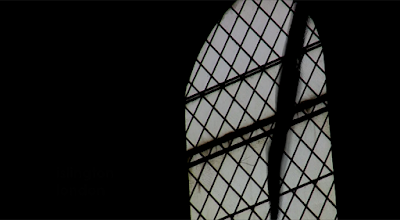
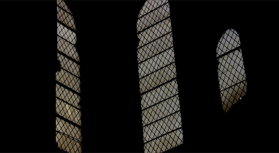
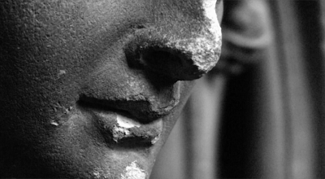
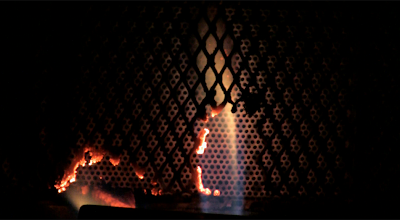
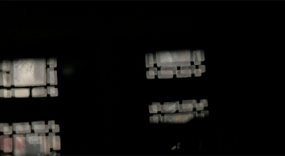
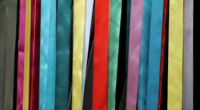
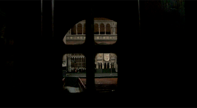
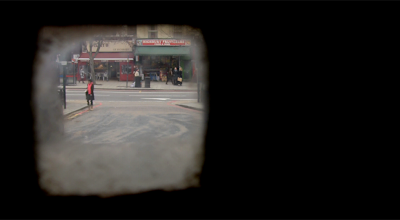
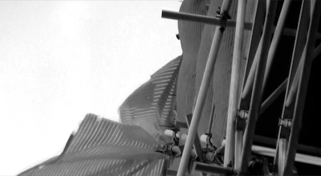
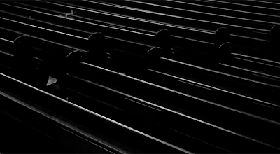
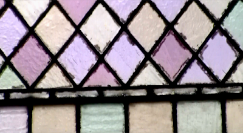
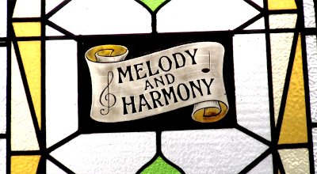
Selected Screenings & Events